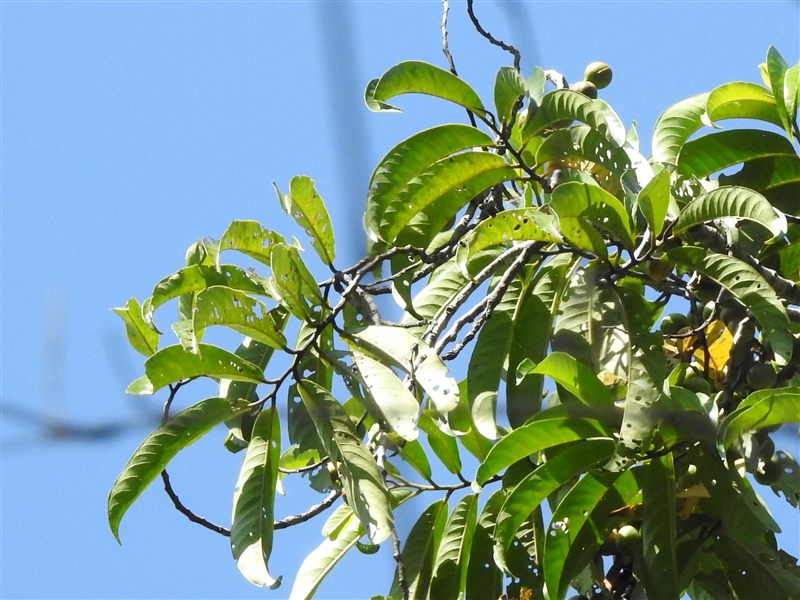

Horsfieldia flocculosa
Vulnerable (IUCN)
Horsfieldia flocculosa is an evergreen tree first described in 1891 as Myristica flocculosa by George King, later transferred to Horsfieldia by Otto Warburg. It is a lowland rainforest tree restricted to the western Malay Peninsula (Pahang, Negeri Sembilan, Selangor, Johor) and Sumatra, growing in lowland tropical rainforest. As with other Myristicaceae, it likely produces reddish sap and small, unisexual flowers typical of the family.
Full profile & references
Leaf, flower & fruit: Species-specific measurements were not found in accessible literature; family members typically have simple, alternate, entire leaves, small unisexual flowers with fused inconspicuous tepals, and fruit that splits along a single suture to reveal a seed covered by a brightly coloured aril.
Ecology & uses: Likely provides aril-covered fruit attractive to birds such as hornbills and pigeons, aiding seed dispersal, though this has not been specifically documented for this species. No documented traditional or economic uses were found. Its Vulnerable IUCN rating reflects ongoing loss of its restricted rainforest habitat.
- Originally described as Myristica flocculosa in 1891, later moved to Horsfieldia.
- Endemic to a small area of the western Malay Peninsula and Sumatra, making it vulnerable to deforestation.
References
- GBIF Backbone Taxonomy — Horsfieldia flocculosa (King) Warb.
- IUCN Red List data via GBIF distributions API
- Wikipedia (cross-check only)